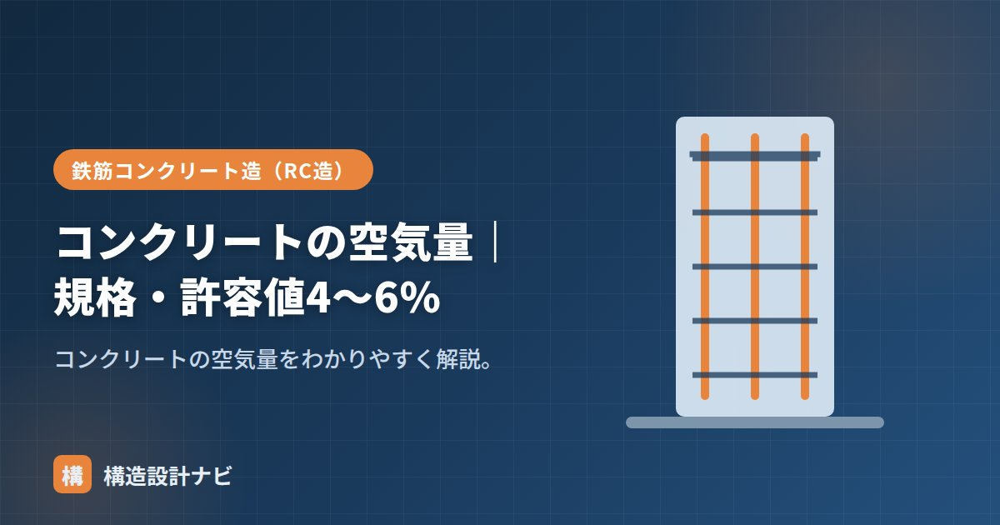

コンクリートの空気量｜規格・許容値4〜6%

空気量とは、コンクリート中に含まれる空気の体積の割合（%）のことです。AE剤で意図的に連行した微細な空気が中心で、ワーカビリティ（施工のしやすさ）や凍結融解に対する耐久性を左右する、フレッシュコンクリートの重要な品質管理項目のひとつです。
- 空気量はコンクリート中の空気の体積割合で、AE剤で意図的に連行する
- 普通コンクリートは標準4.5%、一般に4〜6%程度、許容差±1.5%で管理
- 多いほど耐凍害性は上がるが強度は下がるため、範囲内での管理が重要
空気量の意味
コンクリート中の空気には、AE剤で連行したエントレインドエア（微細で独立した良い空気）と、締固め不足で残るエントラップトエア（粗大な悪い空気）があります。品質管理で扱うのは主に前者で、ワーカビリティと凍結融解抵抗性を高めます。エントレインドエアは直径0.数ミリ程度の非常に小さな独立した気泡として分散し、コンクリートが凍結・融解を繰り返す際に生じる水の膨張圧を、気泡が緩衝材のように吸収する働きを持ちます。
規格・許容値（4〜6%）
普通コンクリートの空気量は4.5%が標準で、一般に4〜6%程度に管理します。JISの許容差は±1.5%です。
| 項目 | 値 |
|---|---|
| 標準（普通コンクリート） | 4.5% |
| 一般的な範囲 | 約4〜6% |
| 許容差 | ±1.5% |
軽量コンクリートなど、コンクリートの種類によって標準の空気量が異なる場合があるため、使用するコンクリートの種類に応じた基準値を確認します。
強度への影響
空気量が多いほどワーカビリティ・耐凍害性は上がりますが、強度は下がります（空気量1%増で圧縮強度が約4〜6%低下）。そのため多すぎず少なすぎず、4〜6%の範囲に保つことが重要です。
測定（空気量試験）
空気量は、圧力を加えて体積変化から求める圧力法（JIS A 1128）などで測定します。受入れ時の品質管理項目の一つです。生コン車が現場に到着するたびに試験を行い、スランプ・温度とあわせて規定値に収まっているかを確認します。
「空気量は少ないほど良い」と考えるのは誤りです。空気量が少なすぎると、寒冷地では凍結融解によるひび割れ・剥離が起きやすくなり、耐久性が損なわれます。強度だけでなく耐久性とのバランスを踏まえ、規定の範囲内に収めることが目的です。
Q1. 空気量が規定値から外れた生コンはどうなりますか？
許容差（±1.5%）を超えた場合は、規格外として受入れを拒否することが一般的です。品質にばらつきが生じるため、荷卸し前の受入れ検査で確認することが重要です。
Q2. 空気量はどんな条件で変動しますか？
練混ぜ時間や運搬時間、気温、AE剤の量などによって変動します。とくに暑中コンクリートでは空気量が減りやすい傾向があるため、現場での管理に注意が必要です。
夏場の現場では、生コン車が到着してから試験を始めるまでの時間が空くほど空気量が落ちている印象があります。規定値ぎりぎりの数値が出たときは、その日の気温と運搬時間もあわせて記録し、次の受入れ判断の材料にしています。
空気量と性能の関係（図解）
空気量の測定方法
| 方法 | 原理 | 適用 |
|---|---|---|
| 空気室圧力法 | 密閉容器に圧力をかけ、空気の圧縮による体積変化から求める | 普通コンクリート（最も一般的） |
| 質量法 | 実測した単位容積質量と、空気を含まない理論値の差から求める | 普通コンクリート |
| 容積法 | 水を用いて空気を追い出し、体積の変化から求める | 軽量コンクリート（骨材が空気を含むため） |
軽量コンクリートで容積法を使うのは、軽量骨材自体が内部に空気を含んでいるためです。圧力法では骨材内部の空気まで測ってしまい、正しい値が得られません。コンクリートの種類に応じた測定方法の選択が必要です。
空気量は現場で変動しやすい項目です。気温が高いと空気量は減り、逆に低いと増えます。また、練混ぜ時間が長すぎると空気が抜け、運搬時間が長いと徐々に減少します。フライアッシュの未燃炭素分がAE剤を吸着して空気量が出ないこともあります。荷卸し地点での測定が求められるのは、こうした変動を捉えるためです。
よくある質問
Q1. 空気量が規格を外れたコンクリートはどうなりますか？
許容差（±1.5%）を外れた場合、そのコンクリートは受け入れられません。返送するか、現場で調整可能な範囲であればAE剤の追加などで対応します。空気量が少なすぎると凍結融解抵抗性が確保できず、多すぎると強度が不足するため、いずれも品質上の問題になります。荷卸し地点での測定と迅速な判断が必要です。
Q2. エントレインドエアとエントラップトエアの違いは何ですか？
エントレインドエアはAE剤で意図的に連行した微細（0.数mm）で独立した気泡で、凍結融解抵抗性の向上に寄与する「良い空気」です。エントラップトエアは締固め不足などで残った粗大で不規則な空気で、強度を下げるだけの「悪い空気」です。品質管理で目標とするのは前者で、後者は締固めによって追い出す必要があります。
Q3. AE剤を使わないコンクリートもありますか？
あります。凍結融解のおそれがない屋内部材や、高強度が要求される部材では、AE剤を使わない（または空気量を抑えた）配合とすることがあります。空気量を減らせばその分強度が上がるためです。ただしワーカビリティが低下するため、減水剤で流動性を確保します。一般の建築工事では、耐久性と施工性の観点からAE剤を使うのが標準です。
まとめ
- 空気量はコンクリート中の空気の体積割合。AE剤で連行する。
- 標準4.5%、一般に4〜6%、許容差±1.5%で管理する。
- 多いとワーカビリティ・耐凍害性は上がるが強度は下がる（1%で約4〜6%）。
- 少なすぎると耐凍害性が損なわれるため、範囲内での管理が目的。